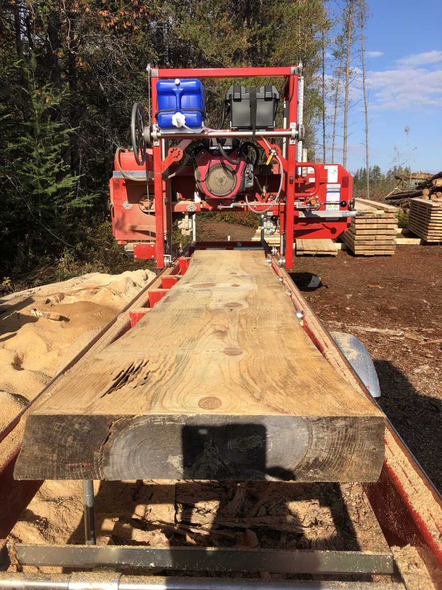
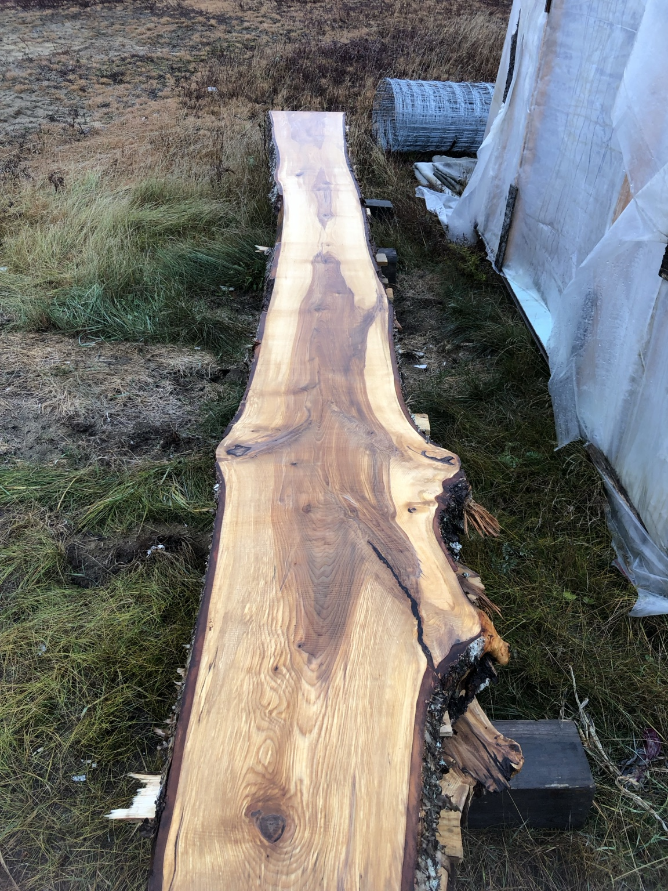
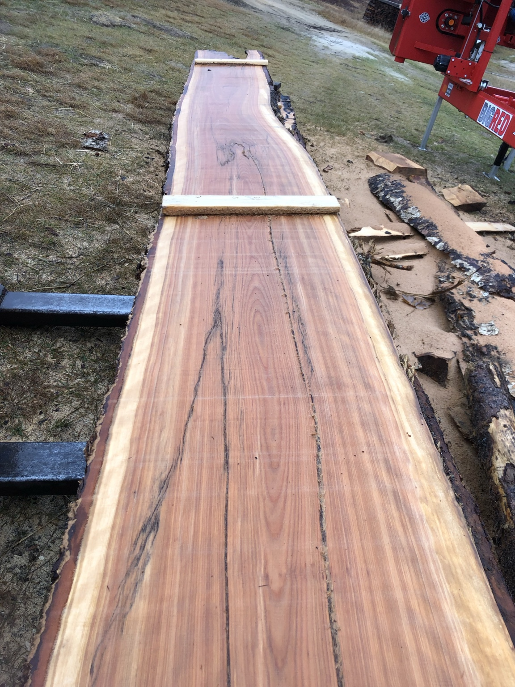
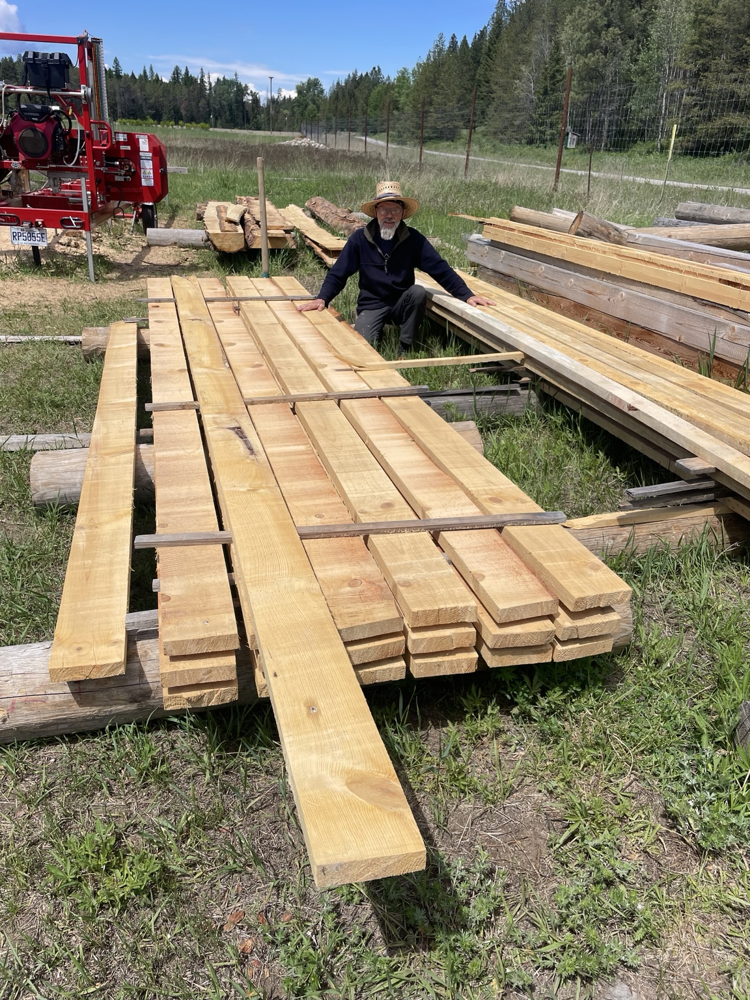

LE MOULIN DE PATRICE
PAT WOOD.
Du billot à la planche.
Le plaisir de transformer le bois,
une coupe à la fois.
01 / LE MOULIN
Du bois brut.
Du vrai plaisir.
Un moulin rouge, des billots et la forêt tout près. C’est ici que commence l’univers de PAT WOOD.
À chaque passage de la lame, le bois révèle ses veines, ses nœuds et ses couleurs. Le billot se transforme, et une nouvelle pièce prend forme.
Le voir à l’œuvre
02 / MES RÉALISATIONS
Le caractère du bois.
Au naturel.
Des contours irréguliers, des nuances uniques.
Chaque planche a quelque chose à raconter.
{kind=link}

Agrandir ↗Suivre les courbes du bois.
{kind=link}

Agrandir ↗Révéler ce qu’il a d’unique.
{kind=link}

Agrandir ↗Le plaisir du travail accompli.
03 / SCIAGE EN ACTION
Le moulin prend vie.
Le mouvement de la lame, le son du moulin.
Une immersion au plus près du sciage.
04 / GALERIE
Au fil des coupes.
Des billots, des planches et des moments au moulin.
{kind=link}
{kind=link}
{kind=link}
05 / À PROPOS
Moi, c’est Patrice.
Bienvenue au moulin.
PAT WOOD, c’est mon coin pour partager le plaisir de travailler le bois, du billot jusqu’à la planche.
J’y rassemble mes réalisations et des moments passés avec mon moulin. Ce que j’aime montrer : le caractère du bois et la beauté des planches à bord naturel.
Au plaisir de vous faire découvrir la suite.
Patrice